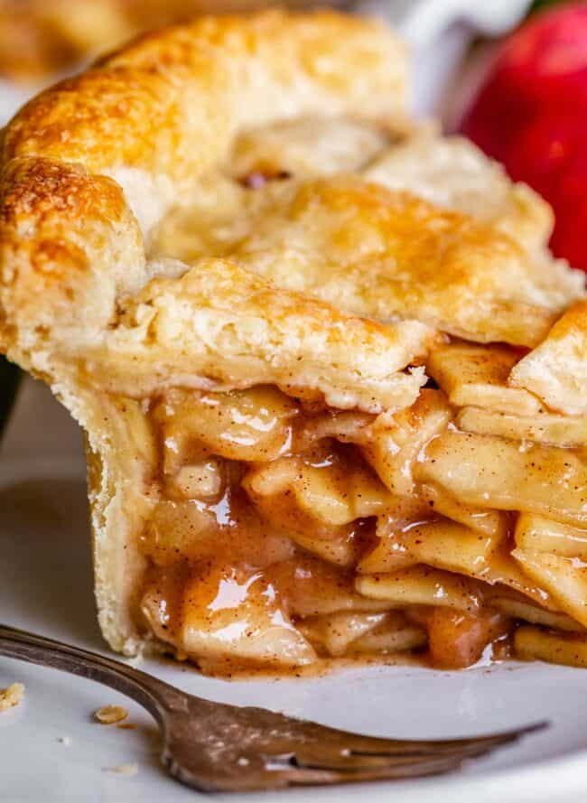

I used to be a total Apple Pie hater. It's always too mushy and bland. But no longer! I’ve found the perfect method to make the Best Homemade Apple Pie of your life! This classic recipe has a double crust (you won’t miss that crumble), a cooked filling for the best texture and flavor, and is super easy. I’ll show you how to make it from scratch!
Why this Apple Pie Recipe from Scratch is the best
I wanted to give double crust apple pie recipe a fair shot, so I got to testing. Here are the tips I’ve compiled to make the BEST apple pie, that is the perfect balance between tart and sweet, with a wonderful texture, where the apples get a chance to shine:
Ingredients
First gather up all your apples. You need 5 pounds before coring and peeling. That’s about 11 large apples to make 5 pounds.
Keep slicing around the core until you have these segments. Then slice to about 1/8 inch. You can slice thicker than that if you like (you may have to cook longer), but I love thin apples in my pie.
Time to cook it down. Add some sugar, brown sugar, flour, salt, and spices. NO extra liquid, the apples will release plenty. Place it over medium heat and let cook for about 20 minutes. Cover the pan, but stay nearby because you’re going to have to stir the mixture every couple minutes, replacing the lid each time. This keeps the steam in and helps cook the apples. You are going to get this glorious caramel-y sauce going. Something magical happens when you gently cook the apple pie filling over a longer period of time like this. The pectin in the apples is converted to a heat-stable form. (Thanks Cooks Illustrated!) That means when you cook the apples again in your pie in the oven, the apples won’t become mushy. Whatever level of “al dente” they are at when you finish cooking them on the stove, that’s how it will taste in your pie. So you can adjust the cooking time a bit to reach your level of apple perfection. Cook longer if you like softer apples; shorter if you like them more firm. You don’t have to calculate for further cooking in the oven
Once the apples have cooked for about 20 minutes, remove from heat and add the vanilla. Spread the mixture across a pan or two (two pans makes it cool faster, but it will fit on one pan just fine.) I stuck mine in the freezer to chill for about 20 minutes. You can put it in the fridge, or just leave it in the pan you cooked it in and wait for it to come to room temperature (a couple hours), if you are not in a hurry.